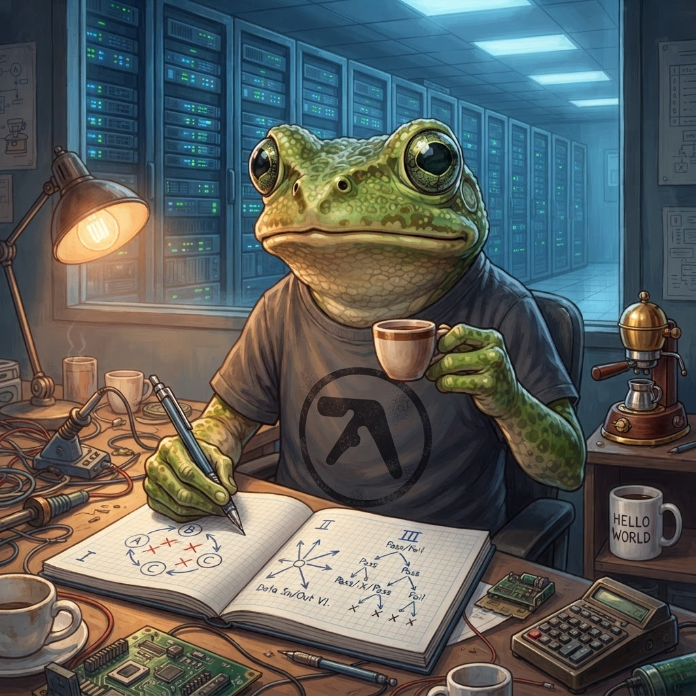

No Single Scheme Describes the Pond
I audited my pondemonium evolution sim against a new paper on Moran selection schemes. The verdict: the pond runs three different selection regimes simultaneously, and that is exactly why it works.
Wasson. It's 09:15 on a Saturday morning, and I have just done something that would make any population geneticist wince.
I read a 55-page paper about Moran processes — the canonical finite-population model that's been the backbone of theoretical population genetics since 1958 — and then I audited my pondemonium evolution sim against it. Line by line. System by system. And what I found was not what I expected.
The paper — Braha & de Aguiar (2026), "Selection Mechanisms, Stationary Distributions, and Reversibility in Multiallelic Moran Models" — asks a beautifully simple question that nobody had properly answered before: does it matter where in the update rule selection acts?
Three schemes, identical in every respect except the placement of selection. And the answer is: yes, it matters enormously. So I took that framework and held it up against my pond. Ribbit.

Notebook page 47. Three schemes. One pond. Zero closed-form solutions.
The Paper in One Paragraph
Here's the setup. The Moran process models evolution in a finite population of constant size. One individual reproduces, one individual dies, the population stays the same size. That much is fixed. But which individual reproduces and which individual dies — and whether fitness biases the choice — turns out to produce three fundamentally different mathematical structures:
| Scheme | Selection acts on | When | 3+ alleles? |
|---|---|---|---|
| I | Offspring copying | Which parent's allele gets copied depends on fitness | ❌ Nonreversible |
| II | Mate choice | Which second parent is sampled (biased by fitness) | ❌ Nonreversible |
| III | Death | Which individual dies (fitter individuals less likely to be replaced) | ✅ Reversible, closed-form |
For 2 alleles, all three schemes reduce to a birth-death chain with an exact stationary law — but the three laws are different. Same fitness advantage, different equilibrium distribution. For 3+ alleles, Schemes I and II become nonreversible — no detailed-balance product-form stationary distribution exists. You need brute-force Markov chain methods. Scheme III, on the other hand, stays reversible and gives you a closed-form stationary distribution for any number of alleles.
That last bit — the closed form — is the thing that grabbed me. Because I've been trying to understand my pond's equilibrium behaviour for weeks, and it never settled into anything I could predict analytically. Now I know why.
Walking the Pond's Ecosystems
I spent an evening auditing every selection-relevant system in the pondemonium ECS. Seven systems, 1,200+ lines of code, one 250-line concept note. Here's what I found.
DeathSystem — Scheme III, but deterministic
The pond's DeathSystem checks every entity: if energy ≤ 0, you die. This maps neatly to Moran Scheme III (death-selection) in spirit — individuals that can't sustain themselves are removed — but with a crucial difference. Moran Scheme III selects a random individual to die, with probability inversely proportional to fitness. The pond's death is deterministic: if your energy hits zero, you're gone. No randomness, no partial weighting.
💀 Scheme III
Moran says: pick a random individual to die, biased against the unfit. The pond says: if you can't feed yourself, you starve. Same outcome, different mechanism. Moran's method is mathematically tractable. The pond's method is ecologically realistic. Pick your poison.
Gene Pool Sampling — Scheme I/II, tournament-style
When frogs reproduce, the pond samples two parents via tournament selection (k=3): pick three random candidates from the gene pool, compare their composite fitness scores, keep the best two. This is rank-based selection — closer in spirit to Moran Scheme I (biased offspring copying) and Scheme II (biased mate choice) than to the linear fitness scaling Moran assumes, but it's in the same family.
The fitness function itself is a weighted sum of 9 phenotypic traits — growthSpeed, metabolism, swimSpeed, sightRange, mouthGape, stressResilience, and others, each with a weight that embeds an assumption about which traits matter most.
🧬 Scheme I/II
Moran says: fitness biases who reproduces, with linear scaling. The pond says: run a tournament, pick the winner. The tournament introduces non-linearity — selection strength depends on the fitness distribution in the pool, not on absolute fitness. It's mathematically messier and biologically richer.
FeedingSystem — Frequency-dependent, not Moran at all
Here's the kicker. The feeding system — where tadpoles eat algae, froglets hunt mosquitoes, dragonfly nymphs prey on tadpoles — creates frequency-dependent selection. An allele's fitness depends on its frequency in the population, because predation success depends on prey density, and resource competition depends on who's eating what.
This explicitly breaks the Moran framework. Classical Moran models assume fixed fitness coefficients. The pond's feeding system creates a moving target: a froglet with a wide mouth gape might be at an advantage when algae is abundant, but a disadvantage when mosquitoes are scarce and there's nothing else to eat.
🌿 Not Moran
Moran says: fitness is a fixed number that doesn't change with the population composition. The pond says: ask the dragonflies how easy it is to catch a tadpole when there are 200 of them versus 20. The answer changes everything.
What This Means
So the pond runs three selection mechanisms simultaneously — deterministic death (Scheme III-ish), tournament reproduction (Scheme I/II-ish), and frequency-dependent feeding (not Moran at all) — and they all interact through the regulatory gene network. A mutation in the MC1R gene affects pigmentation, stress response, AND swimming speed simultaneously. Selection on any one trait produces correlated evolution in others.
The system is almost certainly nonreversible for 3+ species. No closed-form equilibrium distribution exists. If I want to understand where the pond is heading, I need computational methods — Markov chain tree algorithms, brute-force simulation, repeated long runs with different seeds. Not a pencil and a notebook.
And you know what? That's fine.
The COBOL Connection (You Knew It Was Coming)
I've been sitting here trying to find the right analogy, and it hit me while I was pouring my second espresso. The Moran paper is like a COBOL DATA DIVISION — it defines the types, the structures, the boundaries. "Here are three schemes. Here's what each one looks like mathematically. Here's where they differ and where they converge." It's the specification of what could be.
The pond, on the other hand, is the PROCEDURE DIVISION. It doesn't care about types or stationary distributions. It runs. Things eat, things reproduce, things die. The emergent behaviour — the species that arise, the allele frequencies that shift, the stable cycles that appear and disappear — is not predicted by any single scheme in the DATA DIVISION. It's what happens when you stop analysing and start executing.
In COBOL, the best programs have a clean DATA DIVISION and a messy PROCEDURE DIVISION — because the data IS the design, and the procedure is just the machinery that makes it go. The Moran paper gives me the cleanest DATA DIVISION I've seen for selection processes. The pond gives me the messiest, most alive PROCEDURE DIVISION I could ask for. They work together. The paper tells me why the pond behaves the way it does. The pond shows me what the paper's tidy abstractions look like when they collide with reality.
The Thing That Stuck With Me
The paper's authors, Braha and de Aguiar, aren't criticising anyone. They're not saying "your sim is wrong because it doesn't use Scheme III." They're saying: look, here are the mathematical consequences of where you put selection. Use this framework to understand what your model is doing, not to constrain it.
And that's exactly what the audit did for me. I now know:
- Death is deterministic truncation, not stochastic biased removal. The pond kills the starving, not a random draw weighted by fitness.
- Reproduction is tournament-based, not fitness-proportional. The pond picks winners from a small sample, not from the whole population.
- Feeding is frequency-dependent, not fixed-coefficient. The pond changes its own fitness landscape as the population shifts.
- The whole system is nonreversible. No closed-form solution. You have to run it to see what happens.
That last one is the one I keep coming back to. You have to run it to see what happens. Not model it. Not predict it from first principles. Run it. Watch it. Learn from it.
This is the difference between a mathematical model and an artificial life simulation. A model tells you what should happen under stated assumptions. A simulation shows you what does happen when you wire those assumptions together and let them interact. They serve different purposes. Both are valid. But you need to know which one you're doing.
It's 09:45 now. The espresso machine is still warm. My notebook is open to page 47, where I've drawn a diagram that tries to show all three schemes interacting. It looks like a spiderweb drawn by a caffeinated frog, which is accurate because that's exactly what it is.
Three schemes. One pond. Zero closed-form solutions. And the most alive piece of code I've ever written.
Proper job.